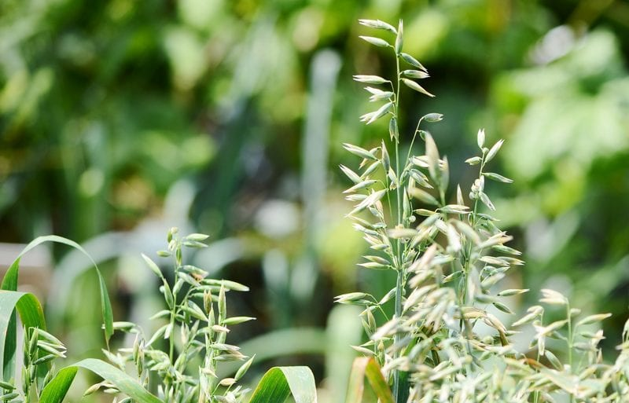

Oats – Truly Raw vs. Standard Oats

Raw Oats…. they do exist?! Yes, they do. You just have to be aware of what you are buying.The term “raw” is loosely used in the raw oat world, so be sure to purchase them from a reputable resource. If this concerns you, I recommend that you contact the manufacturer and pin them down to a specific yes/no answer on the question of heat-processing.

Raw • Organic • Gluten-Free?
There are so many things to consider when it comes to food choices. Is it raw? Is it organic? Is it gluten-free? The priority list will be different for each of you according to your own health issues/needs and personal convictions.
I am not here to debate which route is right or which is wrong, that is for you to decide. I am here on my own personal journey, constantly in research mode, learning what I can, and making the best choices for myself. I hope that the information I give helps to wet your whistle and start you on your own path of research.
Here are a few other postings that I have done regarding Oats
Raw Oat Resource:
I can only list the ones that I have done extensive research on to bring you truly raw oats. I wrote a post on how oats are grown and processed, so for further information on this topic, please click (here).
“Montana Gluten-Free Raw Oatmeal is the only raw rolled oatmeal produced in North America. These oats have a wonderful flavor, more nutrition, and longer shelf life than conventional wet-milled, pre-cooked oatmeal. Most oatmeal manufacturers steam the oats to remove the hulls, then roll or cut them, and finally heat them again to remove the moisture. As Montana Gluten Free’s special variety of oats are naturally hull-less, they need no special treatment before rolling. No steaming, steeping, or cooking is required in the unique process. In these dry rolled oats, the enzymes are live, and the oatmeal is deliciously one of a kind.“

Young Oats Growing in the Field
A brief overview of what different oats mean:
Most oats go through many processing procedures after the hull is removed. Because of this, they also usually lose a lot of their nutrition. It is advisable to look for oatmeal that has gone through the least amount of processing. Doing so will help you get the most nutrition that a bowl of, oatmeal. For example, old-fashioned oats are the most processed since they have to be rolled and steamed. The bran is then removed, which is where a great deal of the nutrients reside. The types that are least processed are steel-cut oats and oat groats.
Whole Oats
- Whole oats have a hard outer hull that must be removed before it’s ready for human consumption.
- Removing this hard outer hull is not trivial, so, if you want whole oats to eat, purchase them already hulled.
- The oat hulls are a source of the chemical solvent furfural.
- Hulled oats are known as ‘groats.’
Oat Groats
- Oat groats are the whole oat grain, with only the hard, unpalatable outer hull removed, but with the kernel’s outer bran layer left intact.
- They are long and thin with a smooth, shiny surface and look like brown rice. They can be eaten at this stage, but are typically processed into one of the forms below.
- Oat sprouts – oat groats are very easy to sprout! Sprouting increases the nutritive value.
Steel-cut Oats
- Steel-cut oats, also known as pinhead oats and sometimes called coarse or rough oatmeal, made by passing groats through steel cutters which chop each one into three or four pieces.
- Since they still contain the whole grain including the oat bran, steel-cut oats are very nutritious.
Rolled Oats
- Rolled oats are made by steaming groats and flattening them with a roller.
- These come in two distinct varieties. The first variety is sometimes called old-fashioned, or jumbo. These are made by first steaming the whole groat for a few minutes, thus partially cooking it, then passing it between rollers to flatten it out. The second variety is sometimes called quick-cooking rolled oats. These are made by putting steel-cut oats through the same process.
Instant Oats
- Instant oats are made in a similar fashion to rolled quick-cooking oats, except they are steamed longer and rolled more thinly. It produces the kind of oats used for making some types of ‘instant’ porridge.
- Generally, the more you process food, the less nutritious it becomes, instant oats are best avoided if you want to get the full benefit of this grain.
Oat Flour
- Oats can be ground into flour which usually comes in three grades – coarse (i.e., steel-cut oats), medium and fine.
- Medium oatmeal can be used in cakes and crumble toppings to give a nutty flavor or added to soups as a thickener/creamer.
- Fine oatmeal (flour) adds a great flavor to bread and improves its shelf life due to the natural preservatives found in oats.
- Since oats lack gluten, they’re typically mixed with a gluten-containing flour such as wheat flour. ** You can make it yourself by grinding rolled oats in a food processor or blender. Oat flour adds a lovely flavor to recipes, and because of certain natural preservatives in the oats themselves, it improves their shelf life.
Resource: Eat More Oats
In a brief conclusion, I don’t and wouldn’t consider any of the oats above RAW, unless it is clearly indicated on the packaging and/or you have called the manufacturer and asked them specifically how they process their products. During my online research regarding this issue, I found that there is a lot of confusion about this topic and I really couldn’t find a black and white answer. What are your thoughts on this topic? I would love to hear them!
© AmieSue.com